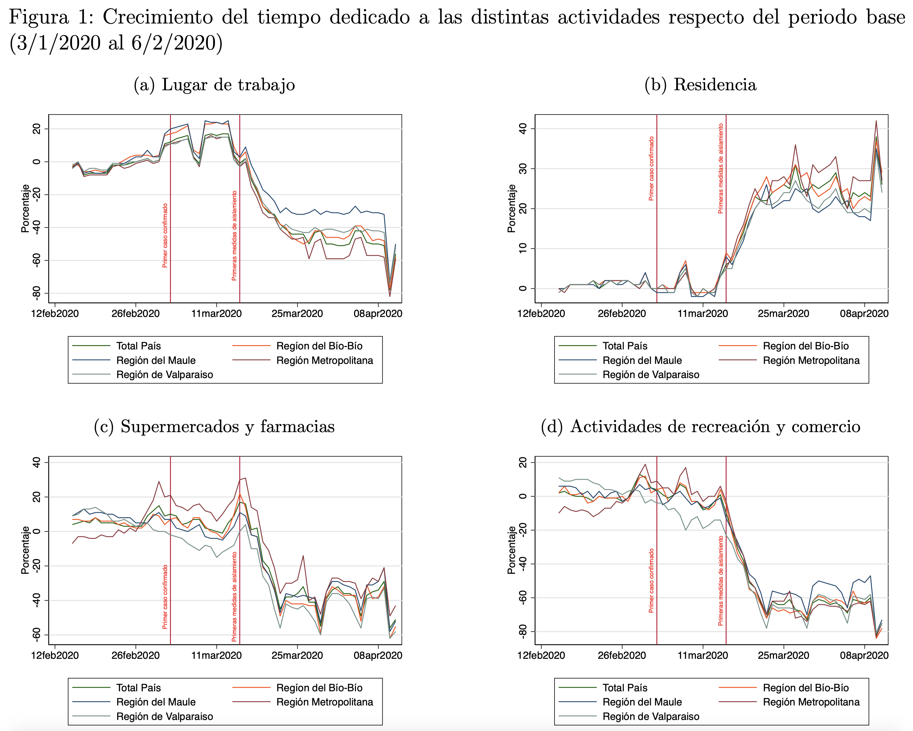

Sobre vulnerabilidad y teletrabajo durante la pandemia
Publicado en la Revista Observatorio Económico de la Facultad de Economía y Negocios de la Universidad Alberto Hurtado
La pandemia del COVID-19 que estamos atravesando representa un evento de proporciones no vistas desde probablemente la gripe española de 1918 y tendrá grandes consecuencias negativas de corto y largo plazo, comparables o incluso más dramáticas de las que tuvo la gran depresión de 1929. Con el objetivo de controlar la pandemia, mediante la reducción de la tasa efectiva de reproducción del virus1, la recomendación ha sido en todo momento el distanciamiento social. La política de distanciamiento social, altamente efectiva para prevenir los contagios, está impactando de manera agresiva en los trabajadores más vulnerables, forzándolos al desempleo y la pobreza.
Evitar siempre que sea posible actividades con contacto social, con el consumo de servicios y el trabajo presencial, es una respuesta natural de las personas para evitar contagiarse2. De hecho, cómo lo enfatiza la literatura reciente, muchas personas iniciaron un proceso de distanciamiento social incluso antes que el mismo sea impuesto por la autoridad. En efecto, desde el inicio de la emergencia hasta el 11 de abril, el consumo de actividades con contacto social en Chile (restaurantes, hoteles, cines, gimnasios, aeropuerto, etc.) había caído en casi 75% en promedio, mientras que la concurrencia a farmacias y supermercados, lo había hecho en 50%. (ver Figura 1)3.
Los traslados hacia el trabajo también habían caído en 56% hacia el 11 de abril. El primer día de caída importante fue el lunes 16 de marzo, día en que se suspenden las clases en todo el país4. Ya una semana después la movilidad hacia lugares de trabajo había caído un 45-50%, nivel en el que se mantiene, excepto durante el viernes de semana santa. El hecho que el tránsito hacia el trabajo no se haya contraído tanto como otras actividades, sin duda está relacionado con la factibilidad de implementar el completo aislamiento y/o teletrabajo de muchos trabajadores. En muchos casos es simplemente inviable reemplazar el rol del trabajador por teletrabajo.
Desafortunadamente los trabajadores más vulnerables son aquellos cuyos trabajos son fundamentalmente presenciales, y los que no tienen la espalda financiera para enfrentar un período de caída sustantiva de ingresos. Y debiéramos encontrar una alta correlación entre nivel de exposición y nivel socio-económico. Chile no es ajeno a la realidad de otros países. Por ejemplo, la data en Estados Unidos muestra que el Covid-19 está enfermando y matando a la población más vulnerable y a trabajadores de bajo nivel de calificación, fundamentalmente de raza negra. Esto está relacionado directamente con la capacidad de autoaislamiento: el Covid-19 está amplificando inequidades sociales preexistentes y asociadas a raza o etnia, clase social y acceso al sistema de salud.
Fuera de los datos de movilidad hacia el trabajo, hay poca información de quiénes han podido continuar trabajando desde su casa. Según datos de Page Group, entre un 15% y un 20% de los trabajadores en la Región Metropolitana están operando bajo algún tipo de modalidad de trabajo virtual, en áreas de servicios, proveedores de intangibles, áreas comerciales y back office5. Y esta limitación en la información disponible dificulta de manera importante la focalización de recursos públicos para ayudar a las familias y trabajadores más vulnerables.
En ausencia de datos fidedignos de quiénes han podio acogerse a una modalidad de teletrabajo, uno puede evaluar dada la distribución del empleo en el país, en qué medida los distintos trabajadores tendrían la posibilidad de teletrabajar dadas las características de su empleo y en qué medida el tipo de actividad que realizan está exenta de las medidas de aislamiento obligatorio impuesto por el gobierno6.
Sólo el 17.4% de los trabajos en Chile son, con alta probabilidad, viables de realizarse desde casa. Las personas que puede de forma viable realizar su trabajo desde casa ganan en promedio 67% más que aquellos que tienen un trabajo predominantemente presencial y tienen una tasa de informalidad sustancialmente menor (11% vs 25%, respectivamente). Solo 1.5% de los trabajadores que pueden realizar su trabajo desde casa son considerados pobres, en tanto que casi el 5% de los trabajadores que no lo pueden hacer son considerados dentro este grupo.
Tal como puede apreciarse en la Figura 2, las mayores tasas de virtualización están en los sectores de administración pública, las actividades inmobiliarias, y enseñanza. En contraste, en los sectores primarios, industrial, gas y agua, industria, construcción, comercio y transporte, las tasas de virtualización son muy bajas. Hay una correlación positiva y fuerte entre tasas de virtualización y calificación de las ocupaciones. Los trabajadores no calificados representan el 25% de aquellos trabajos que no pueden realizarse vía teletrabajo, mientras que para los trabajadores cuyo trabajo es viable de realizarse de esta forma este grupo es sólo 3.7%.
El no poder hacer teletrabajo genera potencialmente una alta exposición en sectores considerados esenciales, como son el sector primario, comercio, gas y agua, transporte y logística y servicios sociales y de salud7.
La distribución de los trabajadores (su residencia) con empleos factibles de virtualizarce y de aquellos con alta exposición (no virtualizables y en actividades consideradas esenciales) está altamente concentrada en comunas específicas. En la Figura 3 se gráfica esta distribución geográfica para Región Metropolitana, la región en la que esta mala distribución es fácilmente visible en el mapa. Las comunas de altos ingresos (como Las Condes, Providencia, Vitacura) tienen una alta fracción de empleos virtualizables y una muy baja exposición de los trabajadores ya sea por que el empleo no requiere ser presencial o por que no pertenece a un sector esencial.
La correlación entre una baja factibilidad de realizar teletrabajo, una mayor exposición y menores ingresos crea una navaja de doble filo, esto es crea riesgos económicos y riesgos sanitarios al mismo tiempo para grupos vulnerables de la población (Mongey et. al., 2020). De aquí la importancia de identificar a estos grupos vulnerables. Por un lado, la escasez de recursos pone en relieve la importancia de que la implementación de políticas de reemplazo de ingreso y de inyección de liquidez sea dirigida y focalizada. Evaluar alternativas de ayudas alternativas a grupos de estas comunas parece razonable, por cuanto es necesario impedir que una situación coyuntural pueda cambiar la configuración social de algunos de estos barrios en el largo plazo. Aplicar políticas más generosas, focalizadas sí, pero a grupos más amplios que los tradicionalmente cubiertos por la política pública es necesario en la contingencia actual. Estos trabajadores no pueden darse el lujo de no trabajar si no tienen alguna fuente alternativa de ingresos. Los costos podrán ser altos, pero el riesgo sanitario de no actuar ya para proteger a estos grupos puede ser muy alto.
Referencias - Jonathan I. Dingel y Brent Neiman (2020): “How Many Jobs Can be Done at Home?”, Mimeo. - Martin S. Eichenbaum, Sergio Rebelo y Mathias Trabandt (2020): “The Macroeconomics of Epidemics”, Mimeo. - Maryam Farboodi, Gregor Jarosch y Robert Shimer (2020): “Internal and External Effects of Social Distancing in a Pandemic”, Mimeo. - Simon Mongey, Laura Pilossoph y Alex Weinberg (2020): “Which workers bear the burden of social distancing policies?”, Mimeo.

Footnotes
Esto es, el número de personas susceptibles que pueden ser contagiadas por una persona infectada.↩︎
Ver por ejemplo los trabajos recientes de Farboodi, Jarosch y Shimer (2020) y de Eichenbaum, Rebelo y Trabandt (2020).↩︎
Datos de Google Mobility para Chile, a partir de datos anonimizados y agregados de posicionamiento global (GPS) de teléfonos inteligentes.↩︎
Notar que los datos están en relación a una línea base que incluye febrero, mes durante el cual muchas personas en Chile están de vacaciones. En la semana previa, en días de semana, la movilidad hacia el lugar del trabajo estaba en un 16-17% por arriba de la línea base, por lo que ya ese lunes 16 la movilidad hacia el trabajo era sensiblemente menor a la estándar.↩︎
Datos extraídos de Diario La Tercera.↩︎
Seguimos la metodología de Dingel y Neiman (2020) que, a partir de la encuesta Occupational Information Network (O*NET) sobre el contexto del trabajo y las actividades laborales de distintas ocupaciones, clasifica la factibilidad de que éstas puedan realizarse vía teletrabajo. Aplicamos esta medida de factibilidad a las ocupaciones de la Encuesta CASEN 2017 usando la clasificación internacional de ocupaciones CIUU88. Para definir sectores de actividad esenciales, usamos el instructivo del Gobierno que puede ser consultado en el siguiente link.↩︎
A sectores como hoteles y restaurantes, construcción y enseñanza, el protocolo establecía que sólo eran esenciales turnos éticos y/o atención en recintos con huéspedes o en predios y obras en los que fuera esencial mantener la actividad. Al no tener suficiente información para clasificar estos sectores, se los omitió de este análisis.↩︎